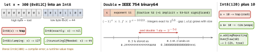

swift · folio
In one line: Swift integer arithmetic traps on overflow (in Debug
and Release) — wrapping is opt-in with &+ &- &*; every lossy
conversion has a named init that says how it loses. Double is
binary IEEE 754, so decimal fractions are approximations: compare with a
tolerance, and keep money in Decimal (built from strings) or integer
minor units.
Download PDF Print view LaTeX source


Integers
Int/UInt= word size: 64-bit on iPhone/Mac, but 32-bit on arm64_32 (Apple Watch Series 4+). UseInteverywhere (count, indices); sized types for file/wire formats and C.Int128/UInt128: Swift 6 (SE-0425).+ - *trap on overflow in-Ononeand-O(only-Ouncheckedremoves checks). Also trap:/ 0,Int.min / -1,abs(Int.min),UInt0 - 1. A trap is a crash, not an exception — nocatch.&+ &- &*: wrap modulo 2n (hashes, checksums, ring counters).&<< &>>: shift count masked mod bitWidth; plain<<with a big count gives 0, never traps.addingReportingOverflow(also subtracting, multiplied, divided) →(partialValue, overflow);multipliedFullWidth(by:)→(high, low).- Conversions:
init(_:)traps ·exactly:optional ·clamping:saturates ·truncatingIfNeeded:low bits ·bitPattern:reinterprets (UInt8(bitPattern: -1)= 255). Generic code:FixedWidthInteger(max,bitWidth,&+) refinesBinaryInteger.
Floating point
Float16(11-bit significand, ≈3 digits; iOS 14+, not on Intel Macs) ·Float(24-bit, ≈7 digits, integers exact only to 16 777 216) ·Double(53-bit). Default toDouble;CGFloatisDoubleon 64-bit and converts implicitly since Swift 5.5 (SE-0307).- Float ops never trap:
1/0.0 = +inf,0/0.0 = NaN.NaNis unequal to everything, itself included — testx.isNaN; NaNs poisonsort,min,max.-0.0equals0.0. Double.ulpOfOne= 2-52≈2.2×10-16 (machine epsilon);x.ulp= gap atx;nextUpsteps. Compare: |a-b| ≤max(abs, rel·max(|a|,|b|)), or swift-numericsisApproximatelyEqual(to:).Int(2.99)= 2,Int(-2.99)= -2 (toward zero; traps on NaN/inf/out of range) — round first on purpose.
Example
let big = 300
Int8(clamping: big) // 127
Int8(truncatingIfNeeded: big) // 44
Int8(exactly: big) // nil
(2.5).rounded(.toNearestOrEven) // 2.0 banker's
let bad: Decimal = 0.1 // literal goes through Double
let good = Decimal(string: "0.10")! // exact
(good * 3).formatted(.currency(code: "EUR")) // 0.30, localisedMoney: Decimal and its own caveats
Decimal(Foundation, =NSDecimal): base-10, 128-bit mantissa (≈38 digits), exponent -128…127.0.1is exact — if built from a string or integers.- Float literal trap:
let d: Decimal = 0.1andDecimal(0.1)go throughDoubleand can carry binary noise. UseDecimal(string:)or integer maths (Decimal(10) / 100). - Still rounds (
1/3); notFloatingPoint(no.rounded()) — useNSDecimalRound(&out, &in, 2, .bankers). Software maths: slower thanDouble. NSDecimalNumber(class; rounding via a behaviour handler) by default raises an ObjC exception on divide-by-zero or overflow — a crash, not athrow.- Or integer minor units (
Int64cents; JPY has 0, KWD 3). On the wire: string or integer, never a JSON float. - Display:
.currency(code:),.precision(.fractionLength(2))— notString(format: "%.2f")(Double, no locale).
Rounding rules
FloatingPointRoundingRule | 2.5 | -2.5 | use |
|---|---|---|---|
.toNearestOrAwayFromZero | 3 | -3 | rounded() |
.toNearestOrEven | 2 | -2 | banker’s, no bias |
.up / .down | 3 / 2 | -2 / -3 | ceil / floor |
.towardZero | 2 | -2 | = Int(x) |
Traps
- “Swift wraps like C” — no: it crashes.
reduce(0, +)on big counts traps; use a wider type or reporting ops. UIntfor “can’t be negative” counts:a - btraps whenb > a. PreferInt.0.1 + 0.2vs0.3: unequal (one ulp apart). No equality tests on computed floats; noDoublefor money; IDs inFloatlose digits past 224.
Remember
“Plus traps, ampersand wraps, reporting tells.” Conversions: trap · exactly · clamping · truncating · bitPattern. Money: strings in, Decimal/cents inside, FormatStyle out.